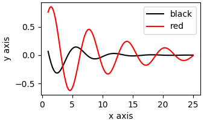
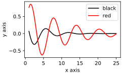

Extract data from figures using Inkscape
Last
edited:
In this tutorial, we are going to extract data from figures in pdf’s using a vector graphics editor (Inkscape), a text editor, and a spreadsheet software. In principle, any other vector graphics editor will work. As for the spreadsheet software, I am using LibreOffice Calc. Before we began, we have to understand I little about digital graphic formats.
Digital graphic formats
We can categorize digital images into two groups: vector or raster graphics. The mais difference between then is that raster graphics (.png, .jpg, ...) are made of pixels, while vector graphics (.svg, .eps, ...) are made of vector cartesian points. The figure below is an example of raster image. Note that, if you zoom in on the image, the image starts to get blurry.

Below, we have an example of a vector image. Note that, no matter how much you zoom in on the image there is no blur. This is what makes vector format perfect for high-quality publication figures or presentation on big screens. Raster images should be preferred mostly when the image is a photograph (sometimes, heatmaps are also better presented using raster format).

We can split up digital images into two groups: vector or raster graphics. Raster images are made o pixels and vector images are made of vector points. The figure on the left is an example of vector image, while the figure on the right is an example of raster image
He heard quiet steps. Who could be following him this late at night and in this deadbeat part of town? And at this particular moment, just after he pulled off the big time and was making off with the greenbacks. Was there another crook who'd had the same idea, and was now watching him and waiting for a chance to grab the fruit of his labor? Or did the steps behind him mean that one of many law officers in town was on to him and just waiting to pounce and snap those cuffs on his wrists? He nervously looked all around. Suddenly he saw the alley. Like lightning he darted off to the left and disappeared between the two warehouses almost falling over the trash can lying in the middle of the sidewalk. He tried to nervously tap his way along in the inky darkness and suddenly stiffened: it was a dead-end, he would have to go back the way he had come. The steps got louder and louder, he saw the black outline of a figure coming around the corner. Is this the end of the line? he thought pressing himself back against the wall trying to make himself invisible in the dark, was all that planning and energy wasted? He was dripping with sweat now, cold and wet, he could smell the fear coming off his clothes. Suddenly next to him, with a barely noticeable squeak, a door swung quietly to and fro in the night's breeze. Could this be the haven he'd prayed for? Slowly he slid toward the door, pressing himself more and more into the wall, into the dark, away from his enemy. Would this door save his hide?
He heard quiet steps behind him. That didn't bode well. Who could be following him this late at night and in this deadbeat part of town? And at this particular moment, just after he pulled off the big time and was making off with the greenbacks. Was there another crook who'd had the same idea, and was now watching him and waiting for a chance to grab the fruit of his labor? Or did the steps behind him mean that one of many law officers in town was on to him and just waiting to pounce and snap those cuffs on his wrists? He nervously looked all around. Suddenly he saw the alley. Like lightning he darted off to the left and disappeared between the two warehouses almost falling over the trash can lying in the middle of the sidewalk. He tried to nervously tap his way along in the inky darkness and suddenly stiffened: it was a dead-end, he would have to go back the way he had come. The steps got louder and louder, he saw the black outline of a figure coming around the corner. Is this the end of the line? he thought pressing himself back against the wall trying to make himself invisible in the dark, was all that planning and energy wasted? He was dripping with sweat now, cold and wet, he could smell the fear coming off his clothes. Suddenly next to him, with a barely noticeable squeak, a door swung quietly to and fro in the night's breeze. Could this be the haven he'd prayed for? Slowly he slid toward the door, pressing himself more and more into the wall, into the dark, away from his enemy. Would this door save his hide?
He heard quiet steps behind him. That didn't bode well. Who could be following him this late at night and in this deadbeat part of town? And at this particular moment, just after he pulled off the big time and was making off with the greenbacks. Was there another crook who'd had the same idea, and was now watching him and waiting for a chance to grab the fruit of his labor? Or did the steps behind him mean that one of many law officers in town was on to him and just waiting to pounce and snap those cuffs on his wrists? He nervously looked all around. Suddenly he saw the alley. Like lightning he darted off to the left and disappeared between the two warehouses almost falling over the trash can lying in the middle of the sidewalk. He tried to nervously tap his way along in the inky darkness and suddenly stiffened: it was a dead-end, he would have to go back the way he had come. The steps got louder and louder, he saw the black outline of a figure coming around the corner. Is this the end of the line? he thought pressing himself back against the wall trying to make himself invisible in the dark, was all that planning and energy wasted? He was dripping with sweat now, cold and wet, he could smell the fear coming off his clothes. Suddenly next to him, with a barely noticeable squeak, a door swung quietly to and fro in the night's breeze. Could this be the haven he'd prayed for? Slowly he slid toward the door, pressing himself more and more into the wall, into the dark, away from his enemy. Would this door save his hide?